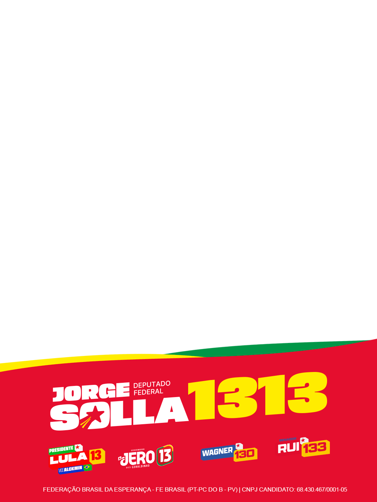

Minha colinha
Escolha seu estadual
A linha de deputado estadual será preenchida na hora.


FEDERAÇÃO BRASIL DA ESPERANÇA - FE BRASIL (PT-PC DO B - PV)
DEPUTADO
FEDERALJorge Solla
FEDERALJorge Solla
1313
CONFIRMA
DEPUTADO
ESTADUALEscolha abaixo
ESTADUALEscolha abaixo
00000
CONFIRMA
⌕
53 estaduais · busque pelo nome de urna
Escolha um estadual para baixar.
A linha vazia será
preenchida com o nome e os cinco dígitos.